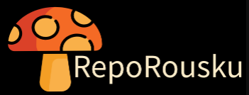

Tervetuloa RepoRouskuun!
RepoRousku on mikropalvelu, joka tarjoaa kattavan näkymän GitLab-repositorioprojektiin. Tämä ohjelma on rakennettu Streamlitillä, Pythonilla ja sillä noudetaan dataa GitLabista ja Clockifystä REST API -rajapintojen avulla.
Tip
Olitpa projektitiimin jäsen tai opettaja, RepoRousku antaa sinulle hyvän käsityksen projektin tilasta visualisoiden kaiken tarvittavan käyttäjäystävälliseen käyttöliittymään.
Ominaisuudet
-
GitLab & Clockify integraatiot: Yhdistä GitLabiin sekä Clockifyihin ja hae projektitietoja, kuten issueiden lukumäärä, projektitiimin jäsenet ja heidän projektiin käyttämänsä aika.
-
Tiimin jäsenien tilastot: Näe ja analysoi tiimin jäseniin liittyviä tilastoja, kuten avoimia tehtäviä ja tuntikertymää.
-
Mukautettavat hallintapaneelit: Luo visuaalisia esityksiä projektin mittareista, kuten palkkikaavioita ja donitsikaavioita, ja hahmota projektin eteneminen yhdellä silmäyksellä.
-
API-käyttö: Käytä REST APIa hakeaksesi tarvittavia projekti- ja tuntitietoja.
Teknologiat
-
Python & Streamlit: RepoRouskun ydin on kehitetty Pythonilla ja Streamlitillä interaktiivisen ja selkeän verkkokäyttöliittymän luomiseksi.
-
Docker: Mikropalvelu on kontitettu Dockerilla, mikä mahdollistaa helpon käyttöönoton ja skaalautuvuuden.
-
GitLab CI/CD: Sovelluksen automatisoitu testaus tapahtuu GitLabin CI/CD-putkien avulla.
Aloitus
Voit aloittaa RepoRouskun käytön seuraavilla ohjeilla:
Kloonaa repositorio: Kloonaa RepoRousku-repositorio paikalliseen ympäristöösi.
Käynnistä sovellus: Käytä Dockeria RepoRousku-kontin rakentamiseen ja ajamiseen.
Riippuvuudet
Erikseen asennettavat kirjastot on koottu erilliseen requirements.txt-tiedostoon. Kirjastot asennetaan Docker-kontin pystytyksen yhteydessä automaattisesti.
Dokumentaation yleiskatsaus
- Käyttöohje: Yksityiskohtaiset ohjeet RepoRouskun käyttämiseen, mukaan lukien ominaisuuksien kuvaukset ja käyttöliittymän toiminnot.
-
Moduulit ja API-dokumentaatio: Kattava sepostus RepoRouskussa käytetyistä funktioista ja moduuleista, sisältäen automaattisesti generoituja dokumentaatioita.
-
Konfiguraatio: Ohjeet mikropalvelun konfigurointiin, mukaan lukien Dockerin ja CI/CD asetukset.
Osallistuminen
Otamme mielellämme vastaan kontribuutioita! Jos haluat osallistua RepoRouskun kehittämiseen, voit lähettää pull requestin. Varmistathan että muutoksesi on hyvin dokumentoitu ja testattu ennen lähettämistä.
Lisenssi
RepoRousku on julkaistu MIT-lisenssillä. Ohjelmalla ei ole mitään takuuta eikä PalikkaPalvelut vastaa ohjelman virheistä johtuneista seurauksista.